Меня зовут Алихан, и я
делаю AI-рекламу, видео и фото, которая выдерживает соседство с настоящей съёмкой. Шесть лет продюсировал рекламу для KFC, Burger King и HONOR и привык планировать готовый ролик до генерации. Теперь веду всю цепочку сам, от хука до мастера.
Создадим AI-моделей под ваш бренд
Подбираем внешность под вашу аудиторию и закрепляем лицо: модель остаётся узнаваемой во всех съёмках и роликах. На ней делаем фото и видео в стиле и айдентике бренда: палитра, свет, шрифты, тон и ваши вещи по пэкшотам.
Обсудить в TelegramMaya, три продукта
Один AI-креатор в уходе, напитках и одежде, и в каждом ролике свой UGC-формат: первая реакция, день из жизни, примерка.
Ten-step routine? Not in Almaty. One drop.
Three p.m. meeting got cancelled. Celebrating responsibly.
Five-two. Does an oversized overshirt eat me? Let's see.
- Креатор
- Одно лицо Soul ID и один голос на все три ролика
- Видео
- Seedance 2.5, 720p, 12…13 с каждый
- Дубли
- 4 генерации на 3 ролика
- Рынки
- Английский; русская озвучка записана для всех трёх и написана под рынок, а не переведена
- В примерке телефон висел в воздухе: переснял с камерой на штативе.
- Модель нарисовала реальный логотип на ноутбуке: убрал на посте, в промптах теперь устройства без бренда.
Model Behavior
AI-модель устала от хаотичного монтажа, забирает курсор у пользователя, сама режиссирует съёмку и выходит из телефона в реальный мир, всё ещё в одежде клиента.
Такой ролик соберём под ваш бренд. Креатив разрабатываем вместе: идею, сценарий и образы согласуем с вами до генерации, дальше вы утверждаете ключевые кадры и черновики.
- Видео
- 16 генераций Seedance 2.5: 10 черновиков в 480p, 6 финализированы в 1080p; ни одного брака
- Кадры
- 45 ключевых кадров и ассетов, 6 в брак
- Монтаж
- Слой интерфейса собран как HTML-страница, отрендерен покадрово и сведён в ffmpeg
- Версии
- Русская и английская; 9:16, 16:9 и соцверсия 22 с
Самый сложный шот
- Выход из вертикального телефона в полный рост: форсированная перспектива с совпадающими стартовым и финальным кадром, с первого дубля.
Капсула гардероба
Шестнадцать вымышленных вещей и цепочки образов для трёх персонажей: за шаг меняется одна вещь, лицо не меняется никогда.
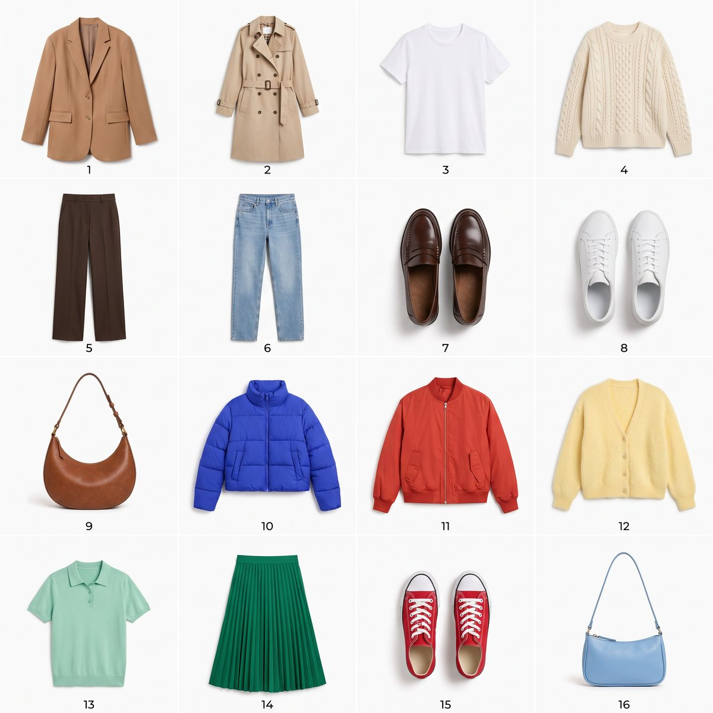
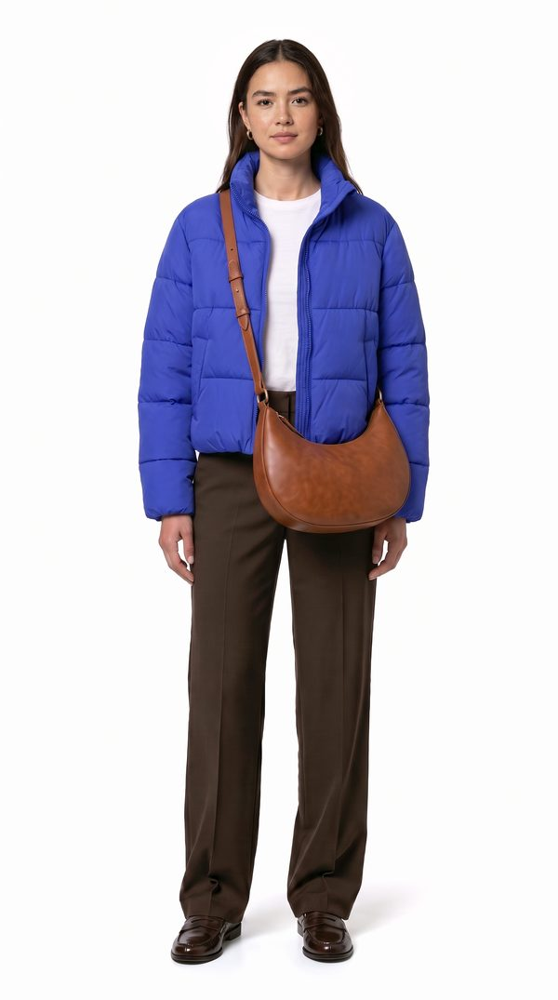
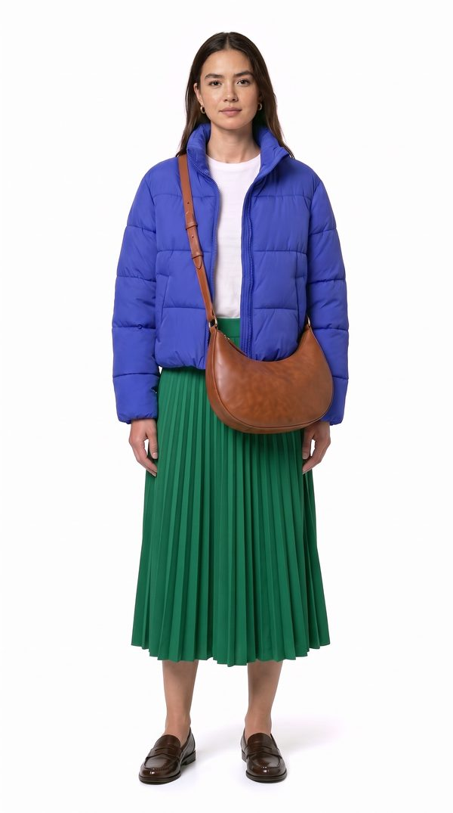
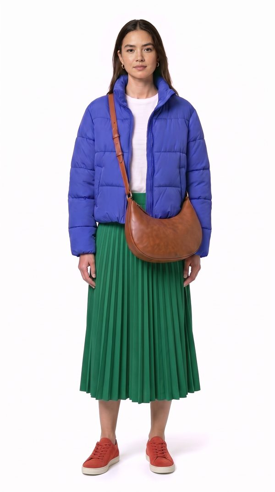
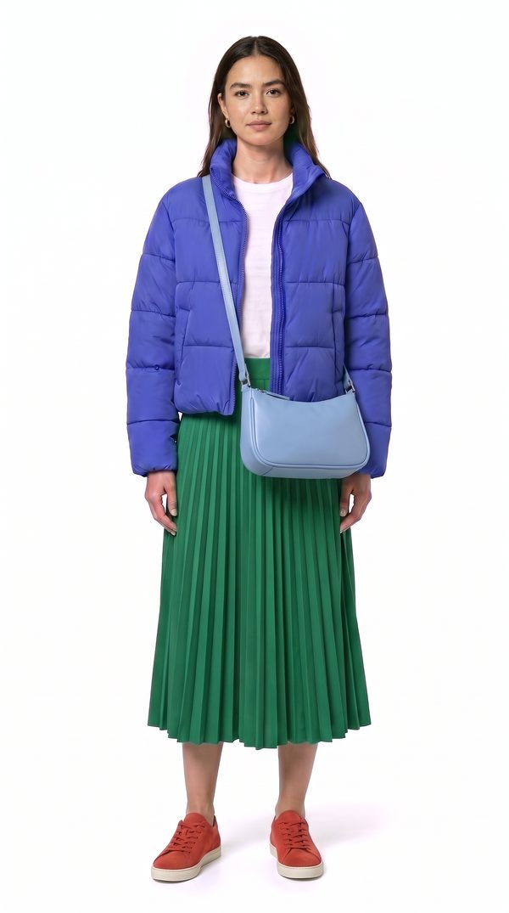
1 вещь за шаг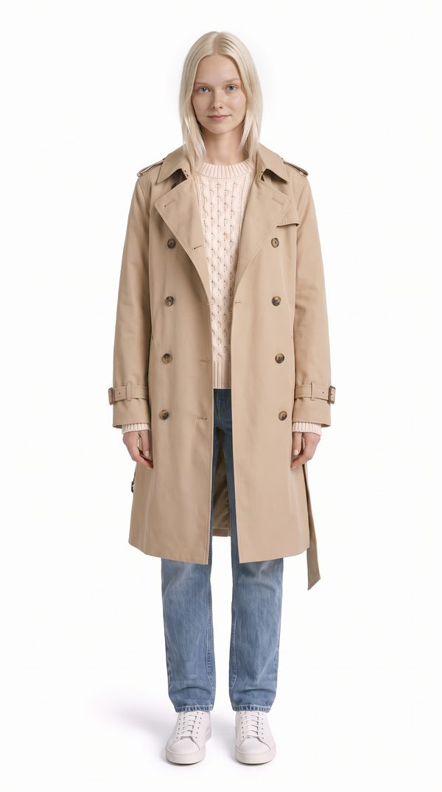
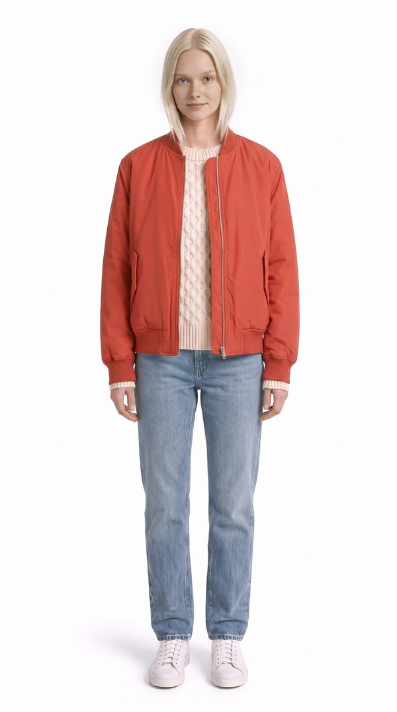
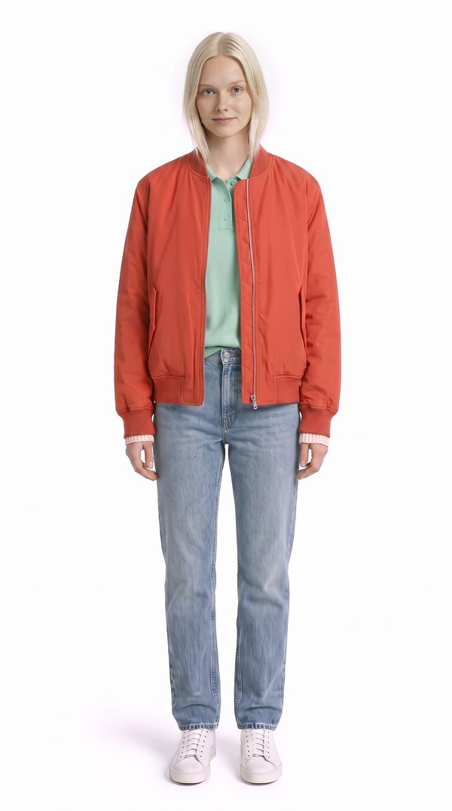
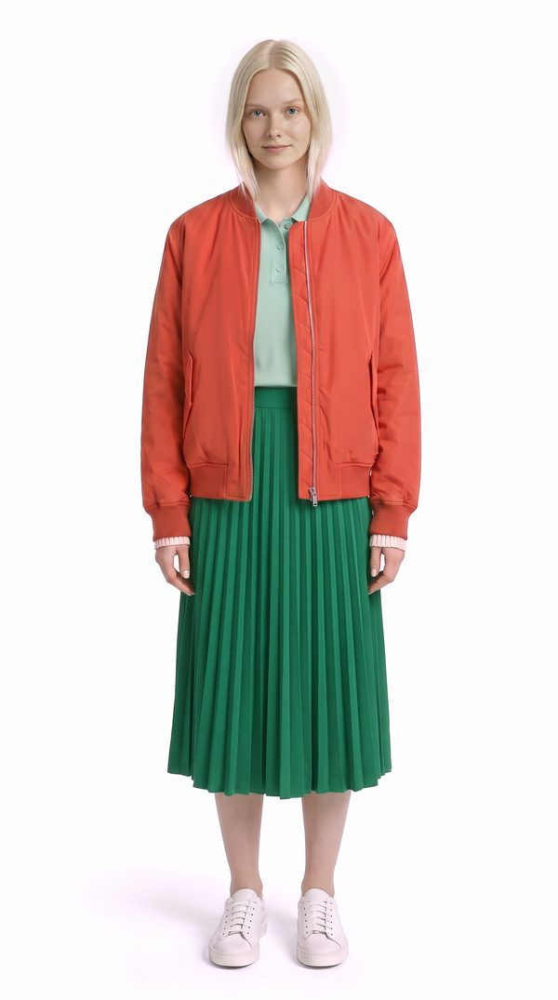
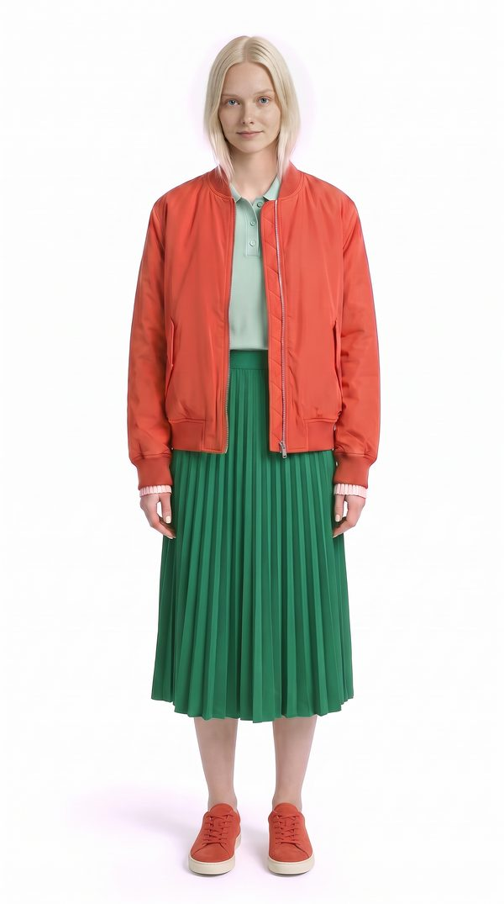
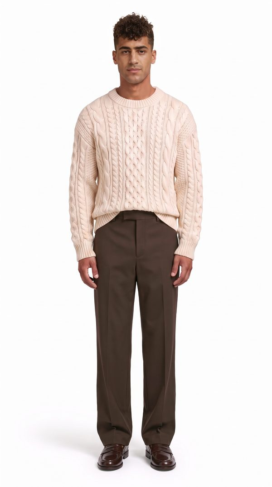
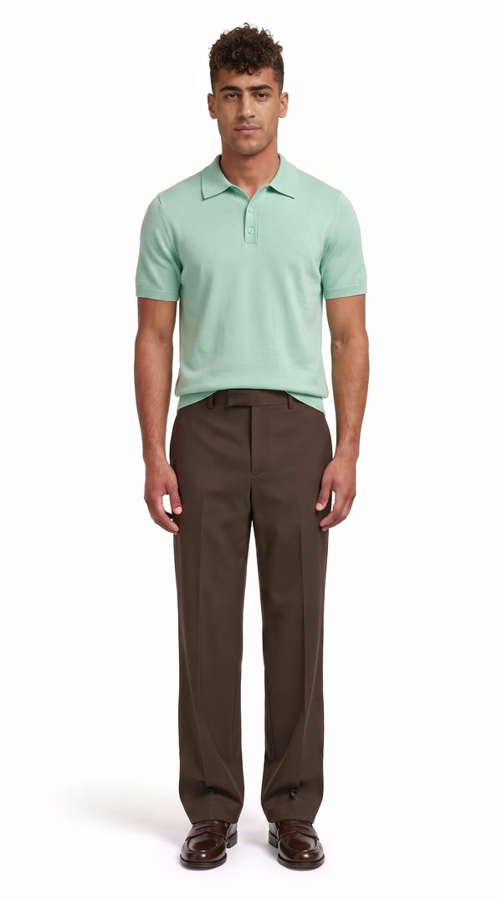
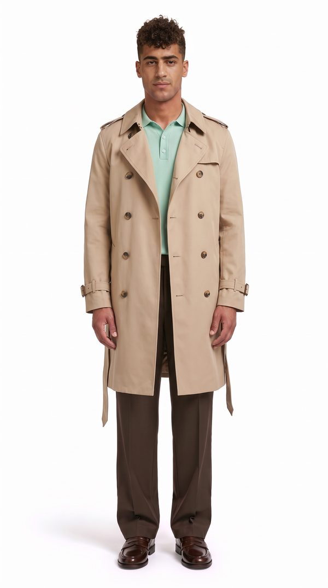
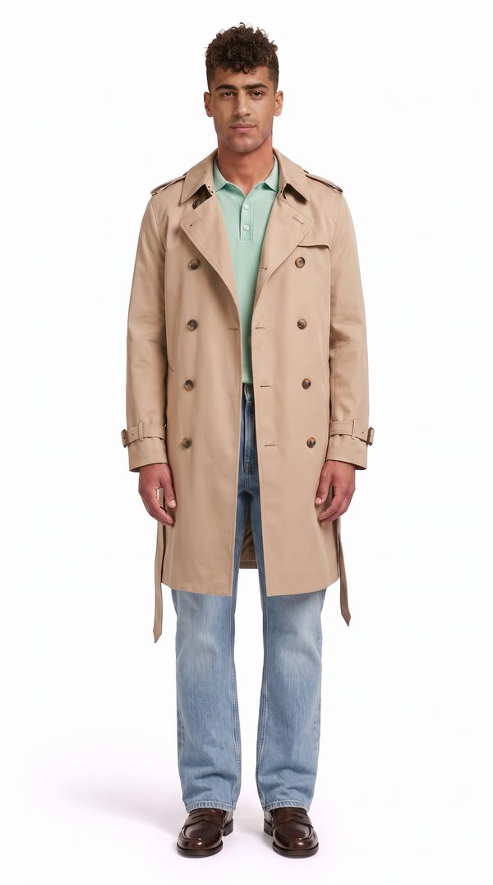
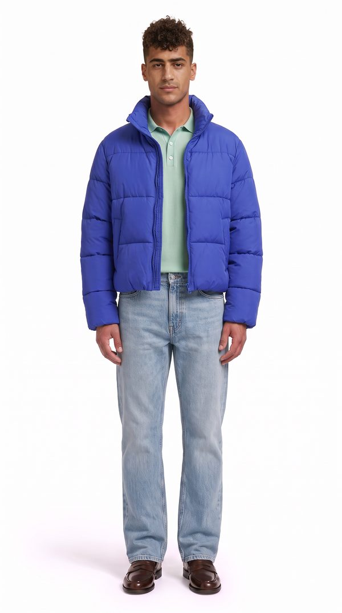
- Метод
- Правка предыдущего кадра, остальное без изменений, одна вещь заменяется по её пэкшоту как второму референсу; после каждого шага лицо возвращается к базовому кадру. Ваши реальные вещи переносим так же, по одной-двум фотографиям
- Итог
- 41 генерация; 14 из 14 шагов цепочек годные с первого дубля
Зачем это рекламе
- Один персонаж носит всю линейку клиента через всю кампанию и не плывёт.
- Замена одной вещи: дешёвая правка, а не новая съёмка или новая генерация человека.
Трендовые шаблоны
Берём трендовый ролик-шаблон Higgsfield и ставим в него нашу модель, наши образы и сумку AY одной генерацией. Хореография, тайминг и монтаж тренда сохраняются.
- Рефы
- Головы из сета персонажа, образы без головы, финальный образ в полный рост с сумкой и пэкшот сумки
- Проверка
- Лицо сверяем с портретом персонажа покадрово, с шагом 0,1 с
- Итог
- 3 шаблона: 2 приняты с первой генерации, 1 доведён монтажом
Зачем это бренду
- Тренд можно подхватить, пока он в рекомендациях: с вашей моделью и вашим продуктом, за одну генерацию.
- Знаем ограничения: крупные планы с поворотом головы уводят лицо, поэтому выбираем шаблоны со средними планами и жёсткими сменами.
Cannonball
Парню слишком жарко для чая: он наливает стакан TAMSHY, разбегается через всю кухню и прыгает в него бомбочкой. Немой гэг на смене масштаба, три хука на одно тело.
- Референс
- Трендовый ролик со сменой масштаба разобран по 14 кадрам; ключевые кадры одной кухней в Nano Banana
- Видео
- 9 клипов Kling 4.0 в 1080p и контрольная сцена Seedance 2.5 с апскейлом
- Монтаж
- Разбег ускорен в 1,5 раза, прыжок в 1,3; стык клипов двух моделей спрятан выравниванием кадра и наплывом 0,2 с; музыка Epidemic Sound, звуки всплеска
- Сдача
- Хуки A, B, C в 9:16, 19…22 с, −14 LUFS, автоматический QC пройден
Зачем это бренду
- Продукт стоит в кадре весь ролик этикеткой к камере, а гэг держит внимание без слов, на любом языке.
- Три хука на одно тело: тестируете начало, а не весь ролик.
Sorry, Pitcher
Камера в холодильнике. Парень, который тайно скучает по газировке, находит банку игристого абрикосового чая за кувшином холодного чая. Одно тело ролика, три разных начала для теста.
Fizzy tea. Good or weird?
Check behind the pitcher
Apricot tea. With actual fizz.
- Формат
- Креатор в камеру, статичная камера в холодильнике, 22,7…25 с; сдача в 9:16 и 4:5
- Голос
- Создан в ElevenLabs и утверждён на слух до любого видео
- Видео
- Seedance 2.5 с ключевым кадром, листом персонажа, продуктом и утверждённым голосом в референсах; черновики 480p, затем те же дубли в 1080p
- Дубли
- 7 клипов, 7 годных с первого дубля; распознавание речи совпало со сценарием во всех 7
- Пост
- Монтажная спецификация на каждый мастер: субтитры по два слова, карточка хука, энд-кард, −14 LUFS; автоматический QC пройден на всех 6 мастерах
- Скачок непрерывности на склейке хука и тела (банка снова на полке): хуки перерезаны в монтаже.
- Прозрачная стеклянная полка показывала одну руку дважды, на колене и на банке. Замаскировал под матовое стекло на посте; «никаких отражающих поверхностей в промптах» теперь правило моей лаборатории хуков.
The One
Vera меняет образ на каждый бит, а сумка AY остаётся. Образы из капсулы гардероба оживают по одному ключевому кадру: белая циклорама, один план в полный рост, своя поза на каждый образ.
- Кадры
- Ключевые кадры K1…K5 из цепочки образов Vera (Nano Banana Pro): лицо и сумка зафиксированы, за шаг меняется одна вещь
- Видео
- Seedance 2.5: черновики 480p, финал 720p, 4…6 с на образ. Клипы без звука: бит и звук ставятся в монтаже
- Сумка
- Строка PRODUCT TRUTH в каждом промпте: форма, цвет, фурнитура и ношение через плечо одинаковые во всех клипах
- Дубли
- 6 годных клипов из 8 финальных генераций
Зачем это бренду
- Одна модель носит всю коллекцию: образы меняются, лицо и аксессуар узнаются с первого кадра.
- Новый образ стоит одного кадра и одного клипа, поэтому вариантов под тест можно сделать много.
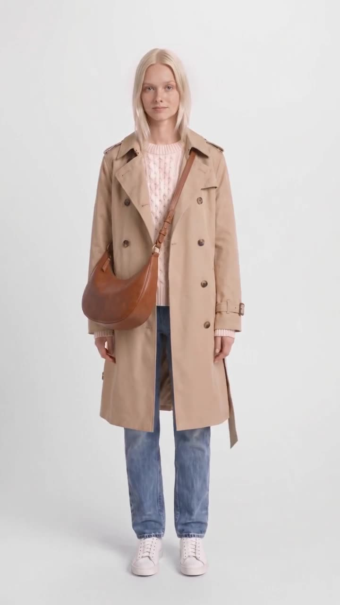
Vera: своя серия UGC. Три продукта, как у Maya: SAULE, TAMSHY, KYR. Добавлю сюда, когда будет готово.
Steppe Throne
Спек-ролик для вымышленной мобильной стратегии. Дочь хана хочет замуж за пастуха Бека, хан спрашивает уровень его ханства: четвёртый. Бек отстраивается с одной сломанной юрты до армии и возвращается к тем же воротам.
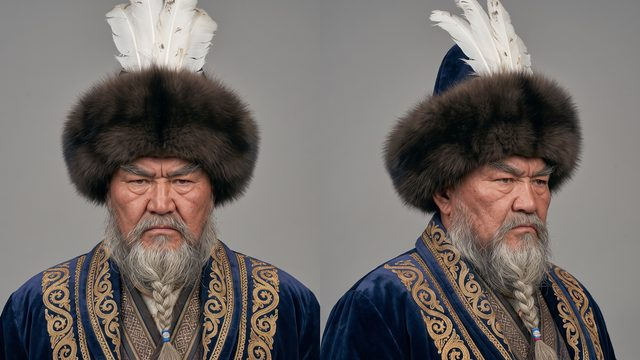
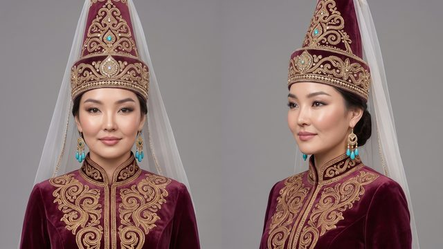
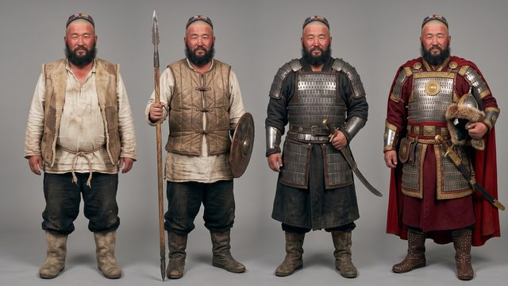
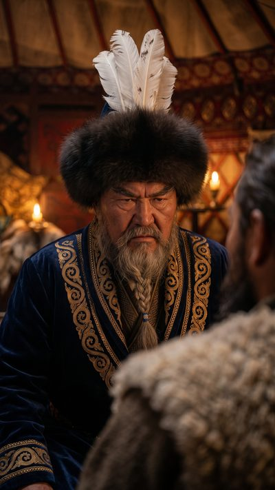
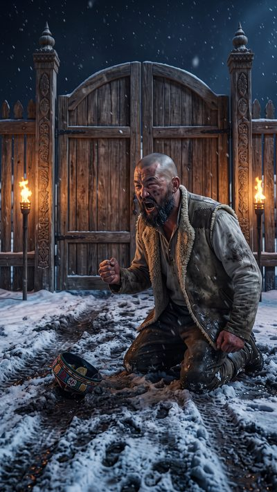
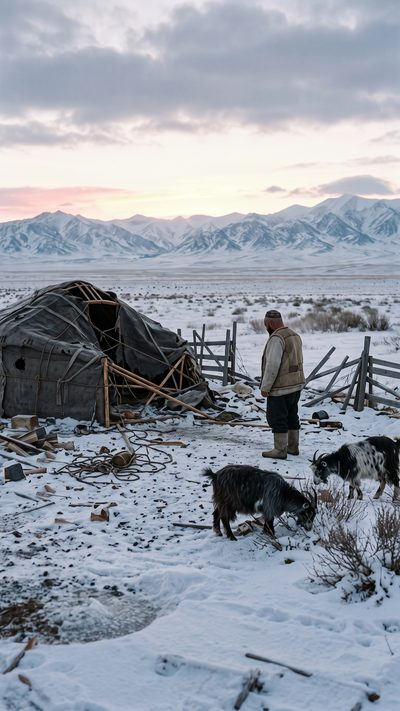
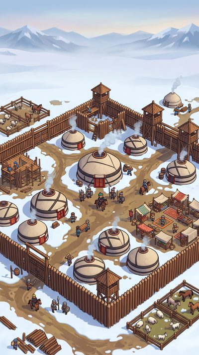
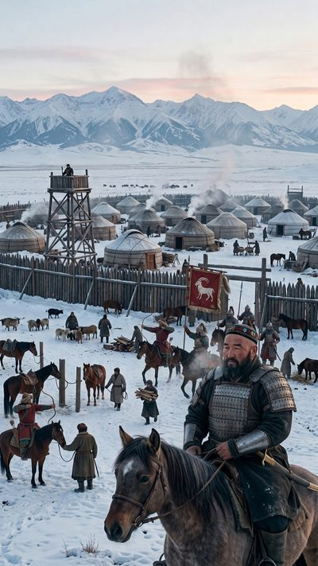
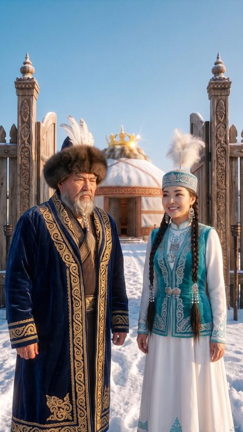
- Кадры
- Листы персонажей и ключевые кадры в Nano Banana Pro; энд-кард в GPT Image 2
- Видео
- Kling O3 по первому и последнему кадру, Seedance 2.0 для синхрона губ, апскейл до 1080p
- Звук
- 5 голосов ElevenLabs v4, музыка с домброй в ElevenLabs Music, шумы; каждая реплика проверена распознаванием речи
- Монтаж
- Значки уровней слоями из кода, караоке-субтитры, сборка в DaVinci Resolve 21 через Python и FCPXML, −14 LUFS
- Срок
- Один день, около 400 кредитов Higgsfield вместе с тестами
Зачем это игре
- Хук «отказ из-за уровня» и прогрессия уровней собраны по разбору 11 реклам жанра: в тест идёт то, что уже работает.
- Персонажи и мир зафиксированы листами, поэтому новые хуки и версии под тест собираются из тех же ассетов.
Ранние работы
Шоты и ролики, сделанные до этого портфолио: продукт и фактуры, моушн интерфейса для финтеха, стройматериалы. Нажмите на кадр, чтобы посмотреть.
До AI
Исполнительный и линейный продюсер в Kinetika Production: брифы, бюджеты до 10 млн тенге, группы от 8 до 20 человек, сдача по глобальным гайдлайнам брендов.
- KFC «The Legendary Flavor»через Cheil
- Hardee's «Switch Off Hunger»Kinetika Production
- Burger King «Teriyaki King Burger is Back!»линейный продюсер
- KMF «With Love for Your Business»исполнительный продюсер